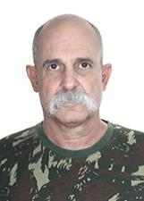
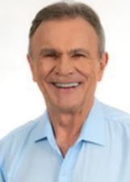
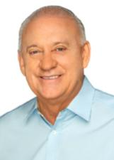

Paraná
Quem ocupa os cargos hoje e quem assume em 2027.
Resultado provisórioTSE, capturado em 29/10/2026
Poder Executivo
Administra o governo e executa as leis: saúde, educação, segurança, estradas e o orçamento.
Governador
Carlos Massa Ratinho JuniorPSD · 4.243.292 votos · eleito em 2022✓ Reeleito›Quem comanda cada cidade do estado.
Poder Legislativo
Cria as leis, aprova o orçamento e fiscaliza o Executivo.
Senadores (3)
 Flavio ArnsREDE · 2.331.740 votos · eleito em 2018↺ Retorno›
Flavio ArnsREDE · 2.331.740 votos · eleito em 2018↺ Retorno› Professor Oriovisto GuimaraesPODE · 2.957.239 votos · eleito em 2018★ Novato no Senado›Sergio MoroUNIÃO · 1.953.188 votos★ Novato no Senado›
Professor Oriovisto GuimaraesPODE · 2.957.239 votos · eleito em 2018★ Novato no Senado›Sergio MoroUNIÃO · 1.953.188 votos★ Novato no Senado›
Deputados federais (30)
Bancada federal por partido
30 cadeiras de Paraná
- PSD723%
- PT517%
- PP413%
- UNIÃO413%
- PL310%
- MDB13%
- PODE13%
- PROS13%
- PSB13%
- PSDB13%
- PV13%
- REPUBLICANOS13%
Do partido com mais cadeiras para o com menos, não por posição política. Cada partido usa a sua cor de marca; cinza é partido sem cor registrada na fonte.
Deputados federais (30): buscar e ver a lista

Sargento FahurPSD · 161.500 votos✓ Reeleito›Sérgio SouzaMDB · 105.661 votos✓ Reeleito›Tadeu VeneriPT · 84.758 votos · eleito em 2022★ Novato na Câmara›Tião MedeirosPP · 109.344 votos★ Novato na Câmara›
Toninho WandscheerPROS · 74.263 votos✓ Reeleito›VermelhoPL · 70.790 votos✓ Reeleito›WelterPT · no cargo desde 2023›Zeca DirceuPT · 123.033 votos✓ Reeleito›Deputados estaduais e distritais (54)
Assembleia por partido
54 cadeiras de Paraná
- PSD1630%
- PT713%
- UNIÃO713%
- PL59%
- PP47%
- REPUBLICANOS36%
- MDB24%
- PODE24%
- PROS24%
- PSDB24%
- CIDADANIA12%
- PDT12%
- PSB12%
- SOLIDARIEDADE12%
Do partido com mais cadeiras para o com menos, não por posição política. Cada partido usa a sua cor de marca; cinza é partido sem cor registrada na fonte.
Deputados estaduais e distritais (54): buscar e ver a lista

TraianoPSD · 116.810 votos✓ Reeleito›Os eleitos de cada cidade do estado.
Poder Judiciário
Julga os conflitos e garante que as leis sigam a Constituição.
Os desembargadores do Tribunal de Justiça e do Tribunal Regional Eleitoral. Não são eleitos.
Poder Executivo
Administra o governo e executa as leis: saúde, educação, segurança, estradas e o orçamento.
Governador
Sergio MoroPL · 3.127.911 votos★ Novato›Quem comanda cada cidade do estado.
Poder Legislativo
Cria as leis, aprova o orçamento e fiscaliza o Executivo.
Senadores (3)
Deltan DallagnolNOVO · 2.904.594 votos★ Novato no Senado›Filipe BarrosPL · 3.148.583 votos★ Novato no Senado›Sergio MoroUNIÃO · 1.953.188 votos★ Novato no Senado›Deputados federais (30)
Bancada federal por partido
30 cadeiras de Paraná
- PL517%
- PT517%
- NOVO413%
- PP413%
- PSD413%
- PODE27%
- REPUBLICANOS27%
- UNIÃO27%
- MDB13%
- PV13%
Do partido com mais cadeiras para o com menos, não por posição política. Cada partido usa a sua cor de marca.
Deputados federais (30): buscar e ver a lista
Deputados estaduais e distritais (54)
Assembleia por partido
54 cadeiras de Paraná
- PL1426%
- PSD1426%
- PT815%
- PP611%
- NOVO36%
- PODE36%
- REPUBLICANOS36%
- MDB24%
- PDT12%
Do partido com mais cadeiras para o com menos, não por posição política. Cada partido usa a sua cor de marca.
Deputados estaduais e distritais (54): buscar e ver a lista
Os eleitos de cada cidade do estado.
Poder Judiciário
Julga os conflitos e garante que as leis sigam a Constituição.
Os desembargadores do Tribunal de Justiça e do Tribunal Regional Eleitoral. Não são eleitos.
Como ler
★ Novato Primeiro mandato nesta casa (Câmara ou Senado).
✓ Reeleito Já estava no cargo e foi eleito de novo.
↺ Retorno Já teve mandato, mas estava fora.
Sem selo Não conseguimos ligar a pessoa a um mandato anterior. Isso não quer dizer que seja novata: simplesmente não afirmamos nada.
Provisório Só é confirmado na diplomação.